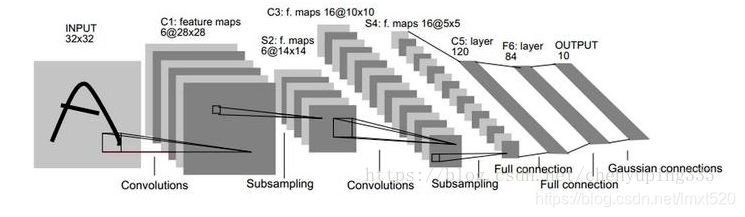
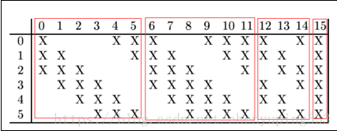
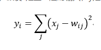

【经典卷积网络】LeNet-5网络解析
LeNet5网络较小，包含深度学习基本模块：卷积层，池化层，全连接层。 
该网络共有7层，不包含输入，每层都包含可训练参数；每个层有多个Feature Map，每个FeatureMap
通过一种卷积滤波器提取输入的一种特征，然后每个FeatureMap有多个神经元。
各层参数详解：
1.input层
将输入图像的尺寸统一归一化为32*32。该网络一般用于mnist手写数据集，只有图片为单通道。
2.c1层-卷积层
输入图片：32*32
卷积核大小：5*5
步长：1
卷积核种类：6
输出featuremap大小：28*28，计算方法：（32-5+1）/1 = 28
(Input-kernel_size+1)/stride
神经元数量：28256
可训练参数：（55+1）6 （每个滤波器5*5=25个unit参数和一个bias参数，一共6个滤波器）
连接数：（55+1）62828 = 122304
详细说明：对输入图像进行第一次卷积运算（使用 6 个大小为 55 的卷积核），得到6个C1特征图（6个大小为2828的 feature maps, 32-5+1=28）。参数量，卷积核的大小为55，总共就有6（55+1）=156个参数，其中+1是表示一个核有一个bias。对于卷积层C1，C1内的每个像素都与输入图像中的55个像素和1个bias有连接，所以总共有1562828=122304个连接（connection）。有122304个连接，但是我们只需要学习156个参数，主要是通过权值共享实现的。
3.s2层-池化层（下采样层）
输入：28*28
采样区域：2*2
采样方式：4个输入相加，乘以一个可训练参数，再加上一个可训练偏置。结果通过sigmoid
采样种类：6
输出featureMap大小：14*14（28/2）
神经元数量：14146
可训练参数：2*6（和的权+偏置）
连接数：（22+1）61414
S2中每个特征图的大小是C1中特征图大小的1/4。
详细说明：第一次卷积之后紧接着就是池化运算，使用 22核 进行池化，于是得到了S2，6个1414的 特征图（28/2=14）。S2这个pooling层是对C1中的2*2区域内的像素求和乘以一个权值系数再加上一个偏置，然后将这个结果再做一次映射。于是每个池化核有两个训练参数，所以共有2x6=12个训练参数，但是有5x14x14x6=5880个连接。
4.C3层-卷积层
输入：S2中所有6个或者几个特征map组合
卷积核大小：5*5
卷积核种类：16
输出featureMap大小：10*10 (14-5+1)=10
C3中的每个特征map是连接到S2中的所有6个或者几个特征map的，表示本层的特征map是上一层提取到的特征map的不同组合
存在的一个方式是：C3的前6个特征图以S2中3个相邻的特征图子集为输入。接下来6个特征图以S2中4个相邻特征图子集为输入。然后的3个以不相邻的4个特征图子集为输入。最后一个将S2中所有特征图为输入。
则可训练参数为：6(355+1)+6(455+1)+3(455+1)+1(655+1)=1516
连接数：10101516=151600
详细说明：第一次池化之后是第二次卷积，第二次卷积的输出是C3，16个10x10的特征图，卷积核大小是 55. 我们知道S2 有6个 1414 的特征图，怎么从6 个特征图得到 16个特征图了？ 这里是通过对S2 的特征图特殊组合计算得到的16个特征图。具体如下：

C3的前6个feature map（对应上图第一个红框的6列）与S2层相连的3个feature map相连接（上图第一个红框），后面6个feature map与S2层相连的4个feature map相连接（上图第二个红框），后面3个feature map与S2层部分不相连的4个feature map相连接，最后一个与S2层的所有feature map相连。卷积核大小依然为55，所以总共有6(355+1)+6(455+1)+3(455+1)+1(655+1)=1516个参数。而图像大小为1010，所以共有151600个连接。
5.s4层-池化层（下采样层)
输入：10*10
采样区域：2*2
采样方式：4个输入相加，乘以一个可训练参数，再加上一个可训练偏置。结果通过sigmoid
采样种类：16
输出featureMap大小：5*5（10/2）
神经元数量：5516=40
可训练参数：2*16=32（和的权+偏置）
连接数：16（22+1）55=2000
S4中每个特征图的大小是C3中特征图大小的1/4
详细说明：S4是pooling层，窗口大小仍然是2*2，共计16个feature map，C3层的16个10x10的图分别进行以2x2为单位的池化得到16个5x5的特征图。这一层有2x16共32个训练参数，5x5x5x16=2000个连接。连接的方式与S2层类似。
6.c5层-卷积层
输入：s4层的全部16个单元特征map（与s4全连接）
卷积核大小：5*5
卷积核种类：120
输出featuremap大小：1*1（5-5+1）
可训练参数/连接：120（1605*5+1） = 48120
详细说明：C5层是一个卷积层。由于S4层的16个图的大小为5x5，与卷积核的大小相同，所以卷积后形成的图的大小为1x1。这里形成120个卷积结果。每个都与上一层的16个图相连。所以共有(5x5x16+1)x120 = 48120个参数，同样有48120个连接。
7.F6层-全连接层
输入：120维向量
计算方式：计算输入向量核权重向量之间的点积，再加上一个偏置，结果通过sigmoid函数输出
训练参数：84*（120+1）=10164
8.output层-全连接层
共有10个节点，分别代表数字0~9，且如果节点i的值为0，则网络识别的结果是数字i。采用的是径向基函数（RBF）的网络连接方式。假设x是上一层的输入，y是RBF的输出，则RBF输出的计算方式是：

pytorch代码示例：
1 | class LeNet(nn.Module): |